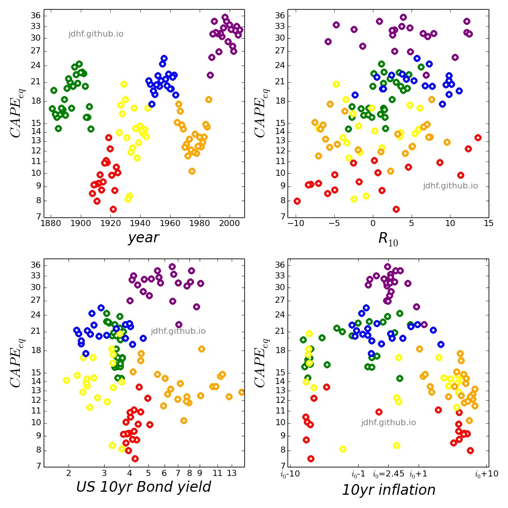

Valuation of the S&P500 (CAPEeq):
10yr US Bond yield and 10yr inflation

CAPEeq behaviour. CAPEeq can be considered as an ''eqilibrium CAPE''. Assuming a R10 − CAPE relation of the form:
R10 = α log( CAPE / CAPEeq )
CAPEeq makes R10 = 0 i.e. there is no net variation in price levels in 10 years.
CAPEeq is shown in the above graph as CAPEeq = CAPE • exp10(-R10/α) ~ here α is fixed to α=-40 ~
(1) CAPEeq vs. year.
(2) CAPEeq vs. R10.
(3) CAPEeq vs. US 10yr bond yield.
(4) CAPEeq vs. 10yr annualized inflation.